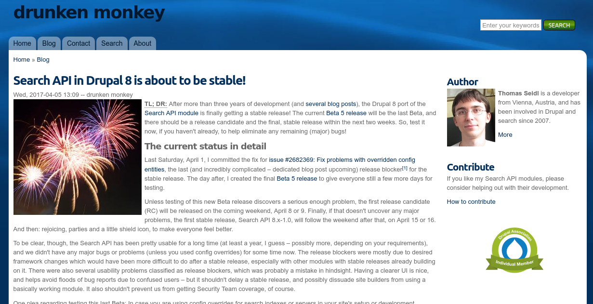
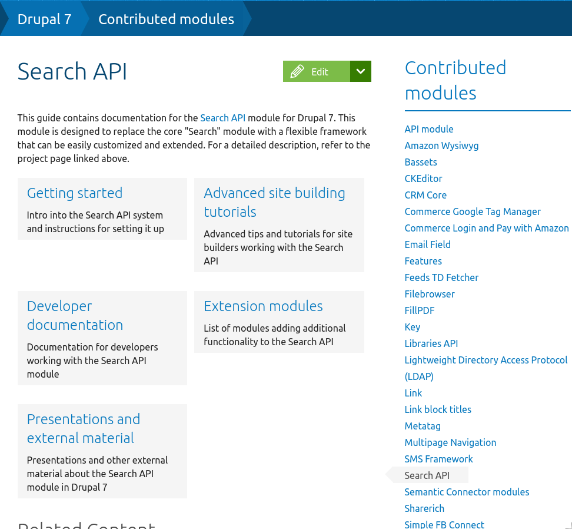
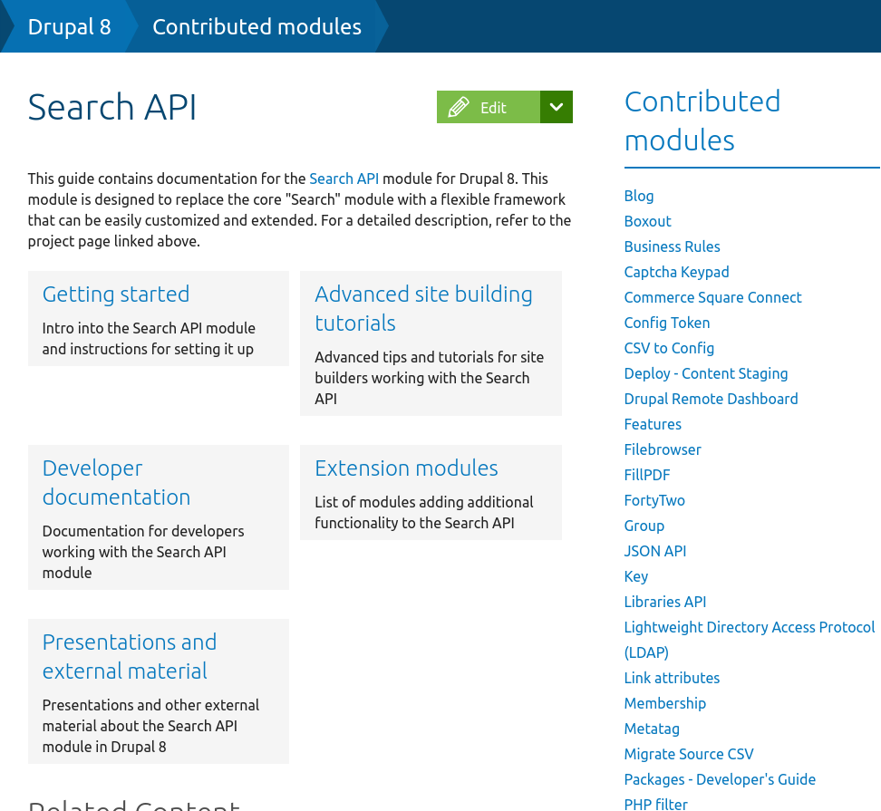
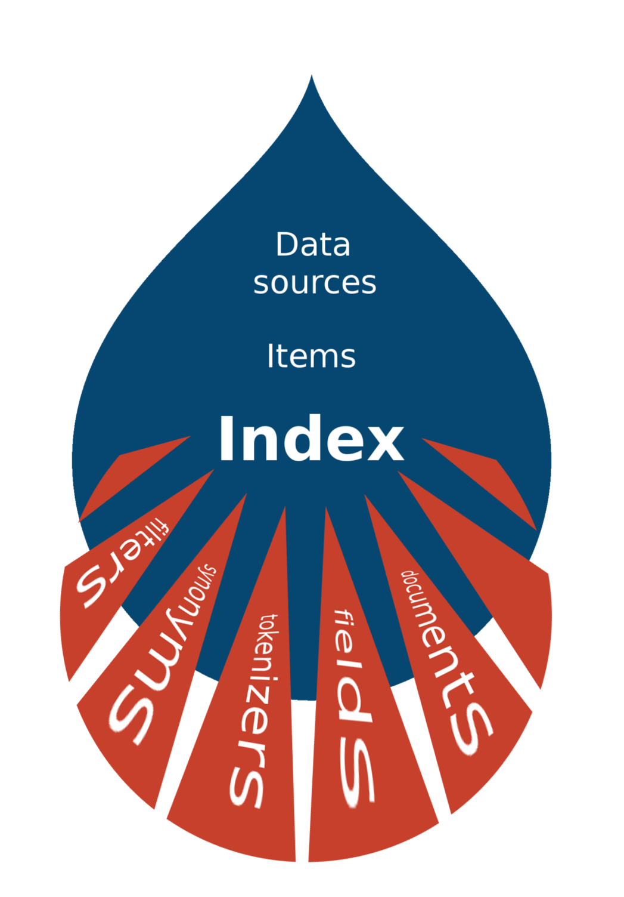
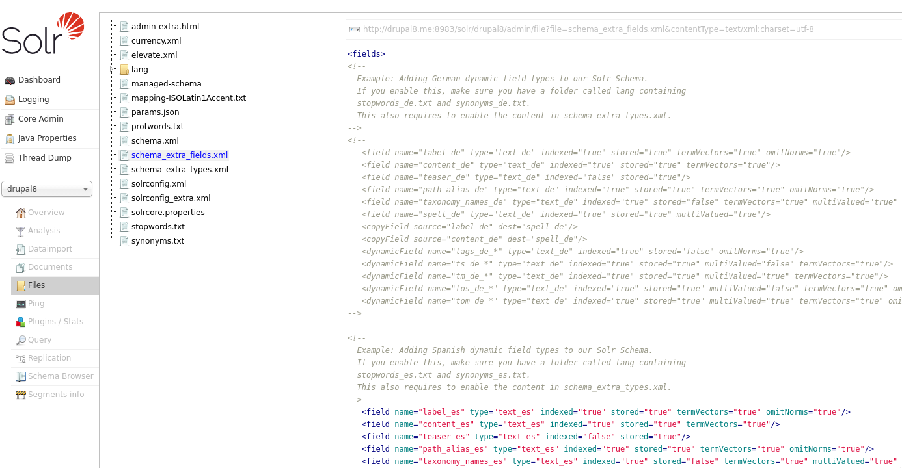

"Bases prácticas para encontrar lo buscado"
Battleplan for Search & Solr in Drupal 8
|
Thomas Seidl |
Nick Veenhof |
git log --graph --abbrev-commit --decorate --format=format:'%C(bold blue)%h%C(reset) - %C(bold green)(%ad)%C(reset) %C(bold white)%s%C(reset) %C(red)- %an%C(reset)%C(bold yellow)%d%C(reset)'
Search API in Drupal 8 is about to be stable!
https://drunkenmonkey.at/blog/search_api_d8_release
Empieza por la Documentación
| https://www.drupal.org/docs/7/modules/search-api  | https://www.drupal.org/docs/8/modules/search-api  |
Search API Solr y Drupal lo hacen muy bien "Out of the box", pero pequeñas diferencias en la configuración importan.
Busca la letra "N" ¿En qué filas sale y cuátas veces?
A
A E
C K N
A R F O
V P G X D
R E A F K O
N V K V O A Z
N P H T A N X U
X D F H P T Z A N
F A X T D N H U P Z
Análisis léxico, morfológico y relevancia
"¿Hay huevos fritos con papas?"
🡓"huevos fritos papas patatas"
🡓| "huev frit pap" | "huev frit patat" |
boost
Añade relevancia a ciertos campos
| Solr acepta la configuración propuesta por Drupal | Drupal aprovecha a Solr para almacenar (indexar) y buscar el contenido |
|  |
sudo vim /etc/apt/sources.list.d/java-8-debian.list
# COPIAR
deb http://ppa.launchpad.net/webupd8team/java/ubuntu trusty main
deb-src http://ppa.launchpad.net/webupd8team/java/ubuntu trusty main
| Drupal | Solr |
|---|---|
| Índice | Ínidice |
| Entidad > Item | Documento |
| Tipos de campos | Tipos de campos |
| Campos | Campos |
| Processors | Tokenizer, Stopwords, Stemm |
| Data alterations | copyField, dynamicField |
| Backend / Connector | SearchApiSolrBackend / StandardSolrConnector - BasicAuthSolrConnector |
:8983/solr/#/my_core/files
|  |
|
Mostrar platos de comida ordenados por lo saludables que son